第 0 回 はじめに: 文書を「コード」として扱う¶
所要時間の目安: 1.5 時間 / 前提: コマンドラインの基本操作
この回のゴール¶
文書が なぜ古くなるのか、そして、それをどう防ぐかを説明できる。
「docs as code」の考え方を、自分の言葉で説明できる。
DocsPipeline の全体 (書く → 組み立てる → 届ける → 守る) と、リポジトリの構成を言える。
手元の環境を整えて、サンプルの文書をビルドできる。
1. 解きたい問題¶
文書は、書いた瞬間から古くなり始めます。コードは変わるのに、文書は誰も直さないからです。 DocsPipeline が解く問題は、次の表のとおりです。
問題 |
起きること |
この仕組みの答え |
|---|---|---|
コードを変えたのに文書が古い |
嘘の説明が残る |
文書を コードの隣 に置き、同じ PR で更新する。docstring から API 文書を 自動生成 する |
文書の誤り (リンク切れ) に気付かない |
読者が迷う |
ビルドの警告を エラー扱い にする ( |
図が古い・手書きの図が実態と違う |
構成の理解を誤る |
図を コードから生成 し、実際の依存と一致することを テスト で確かめる |
手作業の公開が壊れる・他人のページを上書きする |
事故になる |
公開を 段階的 にし、安全装置 (専用の親ページ配下だけ・消さない) を コードに入れる |
秘密情報 (API トークン) が漏れる |
重大な事故 |
環境変数だけに置き、出力から 伏せる。CI では、必要なステップだけに渡す |
どれも「人が気を付ける」では防げません。仕組み (自動化とテスト) で防ぐ のが、この講義の一貫した考え方です。
2. Docs as code (文書をコードとして扱う)¶
コードには、バージョン管理・レビュー・テスト・ビルド・デプロイの仕組みがあります。 文書にも、同じ仕組みを当てはめます。

文書を、コードと 同じ道 に乗せると、次のことが手に入ります。
差分が見える: 文書の変更も、
git diffとレビューの対象になる。壊れたら止まる: リンク切れ・未解決の参照を、CI が止める。
再現できる: 誰の手元でも、同じコマンドで、同じ文書が作れる。
自動化できる: 生成・検査・公開を、人手なしで繰り返せる。
3. 全体像: 書く → 組み立てる → 届ける → 守る¶

段階 |
何をするか |
担当 (第何回で学ぶか) |
|---|---|---|
① 書く |
docstring・Markdown・図を、人が書く |
第 1 回 (Python)・第 11 回 (図) |
② 組み立てる |
Sphinx が読み込み、拡張が足りない機能を補う |
第 6・7 回 |
③ 届ける |
HTML と Confluence に出す。公開は安全装置つき |
第 9 回 |
④ 守る |
検査とテストを、毎回、自動で走らせる |
第 10・12 回 |
道具の部品は、第 2〜5 回で学ぶ「文字列」「プロセス」「構文木」「グラフ」の上に立っています。
4. リポジトリを歩く¶
実際のリポジトリの構成を、コードで確かめましょう。次の例は、docspipeline パッケージの場所から、
リポジトリのルートを割り出して、直下の項目と、パッケージの中のモジュールを並べます。
# 実行できる
from pathlib import Path
import docspipeline
package = Path(docspipeline.__file__).parent
root = package.parent
print("ルートの主な項目:")
for name in ("README.md", "pyproject.toml", "docs", "docspipeline", "examples", "tests", "tools"):
print(" ", name, "(ディレクトリ)" if (root / name).is_dir() else "(ファイル)")
print("docspipeline/ のモジュール:")
for path in sorted(package.glob("*.py")):
print(" ", path.name)
# 出力
ルートの主な項目:
README.md (ファイル)
pyproject.toml (ファイル)
docs (ディレクトリ)
docspipeline (ディレクトリ)
examples (ディレクトリ)
tests (ディレクトリ)
tools (ディレクトリ)
docspipeline/ のモジュール:
__init__.py
__main__.py
cli.py
config.py
confluence.py
diagrams.py
docstring_coverage.py
doctor.py
doxygen.py
files.py
guard.py
mermaid.py
mmdc.py
prompt.py
scaffold.py
structure_map.py
各モジュールの役割は、次のとおりです (詳しくは コードの読み方)。
モジュール |
役割 |
主に学ぶ回 |
|---|---|---|
|
コマンドの入口 |
第 8 回 |
|
Sphinx の共通設定 ( |
第 6 回 |
|
公開の安全装置 |
第 9 回 |
|
Sphinx の拡張 |
第 7 回 |
|
|
第 2・3 回 |
|
ソースの静的解析 |
第 4・5 回 |
|
雛形・環境の確認・図の検査 |
第 8・11 回 |
|
Houdini の偽物 |
第 7 回 |
5. 環境を整える¶
$ git clone https://github.com/manato1201/DocsPipeline.git && cd DocsPipeline
$ python3 -m venv .venv && source .venv/bin/activate
$ pip install -e ".[docs,cpp,confluence,dev]" # 本体 + 文書・C++・公開・開発の道具
$ npm install --no-save @mermaid-js/mermaid-cli@12.0.0 # 図の変換 (mmdc)。Node.js が要る
$ docspipeline doctor # 何が使えるか
docspipeline doctor の出力は、たとえば次のようになります (環境で変わります)。
[OK ] Python: 3.13.x
[OK ] Sphinx: 9.x
[OK ] MyST (Markdown の取り込み): 5.x
[OK ] テーマ furo: 2025.x
[OK ] Breathe (C++): 5.x
[OK ] Confluence ビルダー: 3.x
[OK ] mmdc (Mermaid → SVG): /path/to/mmdc
[OK ] doxygen (C++): /usr/bin/doxygen
[OK ] Confluence のモード: local
[なし] Confluence の環境変数: 未設定: ... (公開するときだけ必要)
OKは使える。NGは 必須 なのに無い。なしは、無くてもよい (その機能を使うときだけ要る)。mmdcが無いと、Mermaid の図は コードのまま 表示されます (第 7 回で、なぜそうなっているかを学びます)。Confluence の環境変数が
なしでも構いません。この講義では、Confluence に つながなくてよい です。
6. ハンズオン: サンプルをビルドする¶
$ docspipeline build examples/python_sample/docs --require-mermaid
$ open examples/python_sample/docs/_build/html/index.html # macOS。Linux は xdg-open
ビルドが成功すると、build succeeded. と表示されます。HTML をブラウザで開き、次を確かめます。
「API リファレンス」に、
Stopwatchなどの docstring から作られた 説明がある。「設計」に、Mermaid の図が 画像として 描かれている (コードのままなら
mmdcが無い)。
続けて、わざと壊してみましょう。サンプルの docs/overview.rst の末尾に、存在しない参照を足します。
:ref:`存在しない参照`
もう一度 docspipeline build examples/python_sample/docs を実行すると、失敗します。
これが「壊れたら止まる」(-W) です。確かめたら、足した行を消して、元に戻してください。
7. この講義の読み方¶
講義の中のコードには、2 種類の印があります。
```python
# 引用: docspipeline/files.py::iter_python_files
...
```
# 引用:は、リポジトリのソースから自動で作った 引用です。今のコードと一致しています。# 実行できるは、テストが実際に実行する 例で、直後の# 出力が、本当の出力です。
講義を読んで「このコードを変えたい」と思ったら、実際に変えてみてください。引用がずれるので、
python tools/quote_code.py docs/lecture で更新し、pytest が通ることを確かめます。
これは、文書とコードを同期させる仕組みそのもの の実習にもなっています (第 10 回)。
ハンズオンのまとめ¶
手順 |
確かめたこと |
|---|---|
|
使える機能 ( |
|
docstring から API 文書が作られる |
|
警告をエラー扱いにすると、壊れた文書を出さない |
確認問題¶
「文書が古くなる」ことを防ぐために、DocsPipeline は 何を自動化 していますか。2 つ挙げてください。
-W(警告をエラー扱い) を付けないと、どんな事故が起きやすいですか。「docs as code」で、文書が コードと同じ道 に乗ると、手に入る利点を 3 つ挙げてください。
docspipeline doctorで、NGとなしの違いは何ですか。mmdcが無い環境でビルドすると、Mermaid の図はどうなりますか。
解答¶
例: (a) docstring からの API 文書の生成、(b) ビルドの警告のエラー化と CI での検査、(c) 図の生成と、実際の依存との一致の検査、(d) 公開の段階化と安全装置。
リンク切れ・未解決の参照が 警告のまま 公開され、誰も気付かない。警告は、ログに流れて、見落とされる。
差分とレビューができる / 壊れたら CI が止める / 誰の手元でも再現できる / 自動化できる、のうちの 3 つ。
NGは、必須 の部品 (Python・Sphinx・MyST・テーマ) が無い。文書をビルドできない。なしは、無くてもビルドできるが、その機能 (Mermaid の画像化・C++・公開) は使えない。コードのまま (テキストとして) 表示される。方針は
docspipeline_mermaid_missingで、literal(既定)・warn・errorから選ぶ。
まとめ¶
概念 |
要点 |
|---|---|
問題 |
文書は放っておくと古くなる。人の注意では防げない |
docs as code |
文書を、コードと同じ道 (VCS・レビュー・テスト・ビルド・デプロイ) に乗せる |
全体像 |
書く → 組み立てる → 届ける。守る が、全体を支える |
道具 |
Sphinx + 拡張。自前の部品は、Python の標準機能の上に立っている |
次回¶
第 1 回 Python の基礎: この講義のコードを読むのに必要な範囲を、実行しながら学びます。